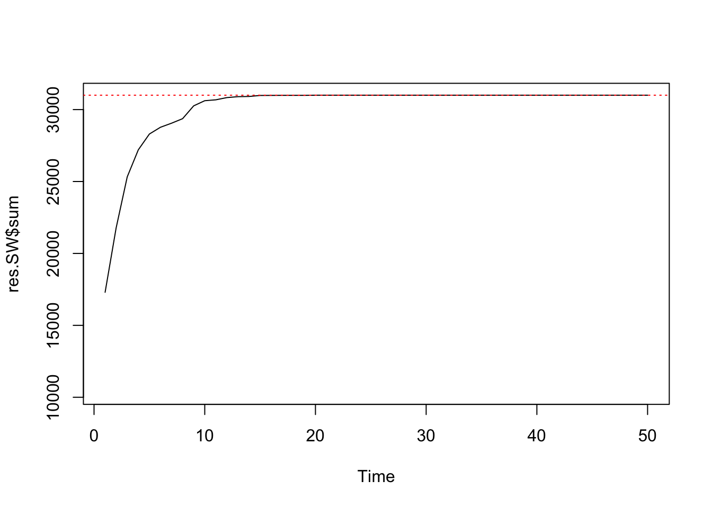
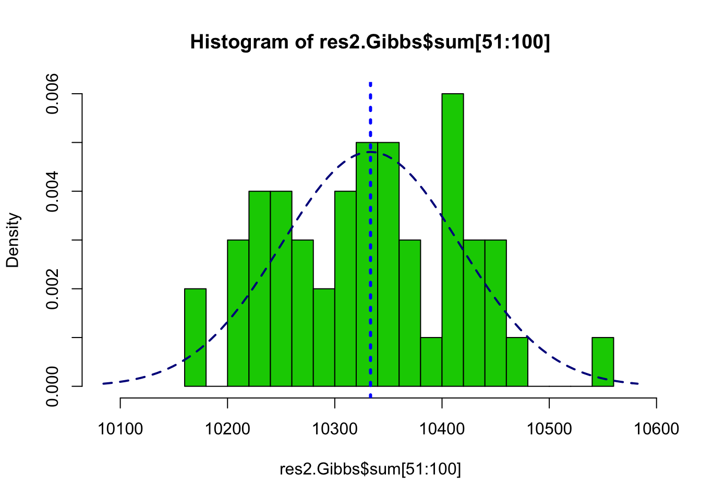
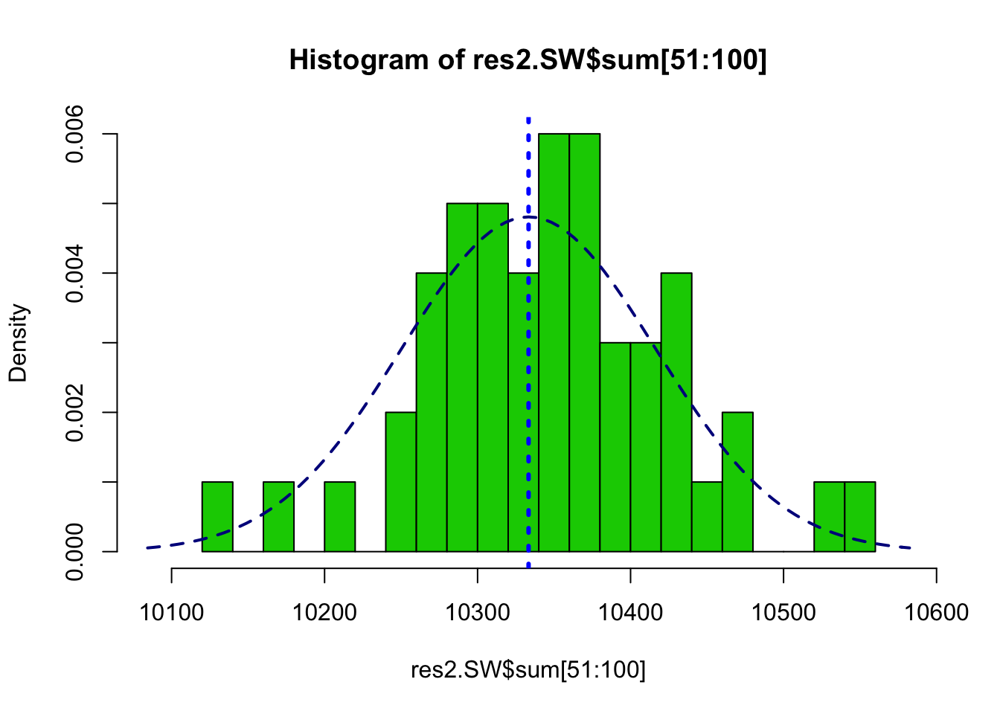

bayesImageS::mcmcPottsNoData
Matt Moores
16 January 2017
This is a follow up to my previous post about the Swendsen-Wang (SW) algorithm, where I mentioned that SW has better convergence properties than Gibbs when the inverse temperature parameter \(\beta\) is large. This difference can be quantified by initialising the two algorithms at known starting points and measuring how many iterations it takes to converge. This is the second in a series of posts describing the functions and algorithms that I have implemented in the R package bayesImageS, which is now available on CRAN.
The Potts model has a doubly-intractable likelihood, so its expectation and variance cannot be computed exactly. Instead, we can use Markov chain Monte Carlo (MCMC) algorithms such as SW or Gibbs sampling to simulate from its distribution for a given value of \(\beta\). However, we need to know how many MCMC iterations to use, so that the chain will have converged to a steady state. Otherwise, any inference using the MCMC samples will be biased.
In the following, the labels z of the Potts model can take k different values. This state space is not ordered, so algorithms such as perfect sampling (Propp & Wilson, 1996; Huber, 2016) cannot be applied. The Potts model is a member of the exponential family, so it has a sufficient statistic S(z) which is the count of like neighbours. The maximum value of S(z), which we will call \(M\), is equal to \(2(n - \sqrt{n})\) for a regular, square lattice. For example, \(M = 112\) for an 8x8 lattice; \(M = 31,000\) for 125x125; and \(M = 1,998,000\) for 1000x1000.
There are two exceptions where the distribution of the Potts model can be computed exactly. When \(\beta=0\) the labels z are independent, hence the sufficient statistic S(z) follows a Binomial distribution with expectation \(M/k\) and variance \(M(1/k)(1 - 1/k)\). For an 8x8 lattice with k=3, the expectation is 64/3 with a variance of 24.89. As β approaches infinity, all of the labels have the same value almost surely. This means that the expectation approaches M asymptotically, while the variance approaches 0.
We can use the endpoints of the distribution to estimate how long the SW and Gibbs algorithms take to converge. The algorithm is initialised at one endpoint, then we monitor S(z) at each iteration until the distribution of the samples has converged to the known expectation and variance. First, let’s look at chequerboard Gibbs sampling for an 8×8 lattice with k=3:
k <- 3
n <- 8*8
mask <- matrix(1,nrow=sqrt(n),ncol=sqrt(n))
neigh <- getNeighbors(mask, c(2,2,0,0))
block <- getBlocks(mask, 2)
edges <- getEdges(mask, c(2,2,0,0))
print(paste(sum(mask),"pixels"))## [1] "64 pixels"print(paste("maximum sufficient statistic S(z) =",nrow(edges)))## [1] "maximum sufficient statistic S(z) = 112"res.Gibbs <- mcmcPottsNoData(beta=5, k=3, neigh, block, niter=50)
ts.plot(res.Gibbs$sum, ylim=c(nrow(edges)/3, nrow(edges)))
abline(h=nrow(edges), col=2, lty=3)Chequerboard Gibbs sampling for a regular 8x8 lattice with k=3 labels.
summary(res.Gibbs$sum[36:50])## Min. 1st Qu. Median Mean 3rd Qu. Max.
## 112 112 112 112 112 112var(res.Gibbs$sum[36:50])## [1] 0We can see that it only takes around 35 iterations for the Gibbs sampler to converge for a lattice of that size. Now for a 125×125 lattice:
n <- 125*125
mask <- matrix(1,nrow=sqrt(n),ncol=sqrt(n))
neigh <- getNeighbors(mask, c(2,2,0,0))
block <- getBlocks(mask, 2)
edges <- getEdges(mask, c(2,2,0,0))
print(paste(sum(mask),"pixels"))## [1] "15625 pixels"print(paste("maximum sufficient statistic S(z) =",nrow(edges)))## [1] "maximum sufficient statistic S(z) = 31000"res.Gibbs <- mcmcPottsNoData(beta=5, k=3, neigh, block, niter=2000)
ts.plot(res.Gibbs$sum, ylim=c(nrow(edges)/3, nrow(edges)))
abline(h=nrow(edges), col=2, lty=3)Chequerboard Gibbs sampling for a regular 125x125 lattice with k=3 labels.
summary(res.Gibbs$sum[1001:2000])## Min. 1st Qu. Median Mean 3rd Qu. Max.
## 30479 30567 30614 30601 30642 30655var(res.Gibbs$sum[1001:2000])## [1] 1797.793Even after 2000 iterations, the distribution of S(z) might not have converged to the known value. Now let’s see how Swendsen-Wang performs for the same lattice:
res.SW <- swNoData(beta=5, k=3, neigh, block, niter=50)
ts.plot(res.SW$sum, ylim=c(nrow(edges)/3, nrow(edges)))
abline(h=nrow(edges), col=2, lty=3)
summary(res.SW$sum[26:50])## Min. 1st Qu. Median Mean 3rd Qu. Max.
## 31000 31000 31000 31000 31000 31000var(res.SW$sum[26:50])## [1] 0After 25 iterations, SW has already converged to the exact distribution. Even though this algorithm is much more expensive for each iteration, it more than makes up for that in efficiency when \(\beta\) is large.
n <- 1000*1000
mask <- matrix(1,nrow=sqrt(n),ncol=sqrt(n))
neigh <- getNeighbors(mask, c(2,2,0,0))
block <- getBlocks(mask, 2)
edges <- getEdges(mask, c(2,2,0,0))
print(paste(sum(mask),"pixels"))## [1] "1e+06 pixels"print(paste("maximum sufficient statistic S(z) =",nrow(edges)))## [1] "maximum sufficient statistic S(z) = 1998000"res.SW <- swNoData(beta=5, k=3, neigh, block, niter=100)
ts.plot(res.SW$sum, ylim=c(nrow(edges)/3, nrow(edges)))
abline(h=nrow(edges), col=2, lty=3)
summary(res.SW$sum[81:100])## Min. 1st Qu. Median Mean 3rd Qu. Max.
## 1998000 1998000 1998000 1998000 1998000 1998000var(res.SW$sum[81:100])## [1] 0Now let’s see what happens when we go in the other direction: initialising the lattice with all labels set to the same value, then updating with \(\beta=0\):
n <- 125*125
mask <- matrix(1,nrow=sqrt(n),ncol=sqrt(n))
neigh <- getNeighbors(mask, c(2,2,0,0))
block <- getBlocks(mask, 2)
edges <- getEdges(mask, c(2,2,0,0))
system.time(res2.Gibbs <- mcmcPottsNoData(beta=0, k=3, neigh, block, niter=100, random=FALSE))## user system elapsed
## 0.394 0.028 0.144ts.plot(res2.Gibbs$sum, ylim=range(c(res2.Gibbs$sum, nrow(edges))))
abline(h=nrow(edges), col=2, lty=3)
abline(h=nrow(edges)/3, col=4, lty=3)summary(res2.Gibbs$sum[51:100])## Min. 1st Qu. Median Mean 3rd Qu. Max.
## 10129 10268 10332 10332 10394 10514var(res2.Gibbs$sum[51:100])## [1] 7486.134The distribution of all 500 samples are very close to the exact distribution with mean 10333.33 and variance 6888.89:
muSz <- nrow(edges)/3
sdSz <- sqrt(nrow(edges)*(1/3)*(2/3))
hist(res2.Gibbs$sum[51:100], freq=FALSE, breaks=20, col=3,
xlim=range(c(res2.Gibbs$sum,muSz - 3*sdSz, muSz + 3*sdSz)))
abline(v=nrow(edges)/3, col=4, lty=3, lwd=3)
curve(dnorm(x, mean=nrow(edges)/3, sd=sqrt(nrow(edges)*(1/3)*(2/3))),
col="darkblue", lwd=2, lty=2, add=TRUE, yaxt="n")
Now for Swendsen-Wang:
system.time(res2.SW <- swNoData(beta=0, k=3, neigh, block, niter=100, random=FALSE))## user system elapsed
## 0.753 0.051 0.226ts.plot(res2.SW$sum, ylim=range(c(res2.SW$sum, nrow(edges))))
abline(h=nrow(edges), col=2, lty=3)
abline(h=nrow(edges)/3, col=4, lty=3)summary(res2.SW$sum[51:100])## Min. 1st Qu. Median Mean 3rd Qu. Max.
## 10156 10291 10332 10331 10368 10505var(res2.SW$sum[51:100])## [1] 6868.608hist(res2.SW$sum[51:100], freq=FALSE, breaks=20, col=3,
xlim=range(c(res2.Gibbs$sum,muSz - 3*sdSz, muSz + 3*sdSz)))
abline(v=nrow(edges)/3, col=4, lty=3, lwd=3)
curve(dnorm(x, mean=muSz, sd=sdSz),
col="darkblue", lwd=2, lty=2, add=TRUE, yaxt="n")